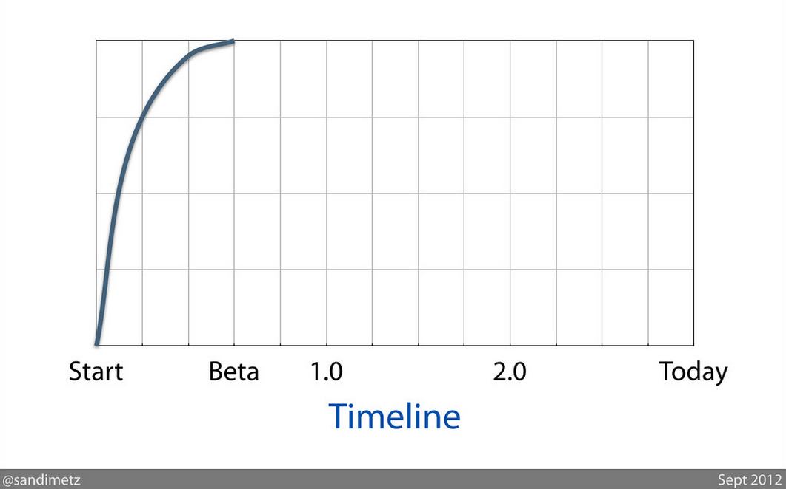
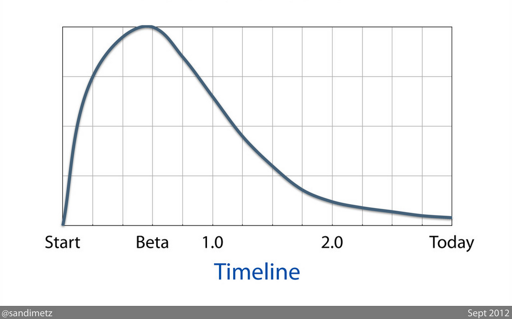

Developer Happiness

https://speakerdeck.com/u/skmetz/p/go-ahead-make-a-messDeveloper Happiness

https://speakerdeck.com/u/skmetz/p/go-ahead-make-a-messSolution 1: Fast Test Suitehttp://twitpic.com/ashs8m/full
Organizations which design systems… are constrained to produce designs
which are copies of the communication structures of these organizations.
Conway's Law
IMPORTANT!
Takeaway: Break up the Team
Sea Monster the CMShttp://www.flickr.com/photos/btsiders/74652478/Rails 2 & Assetshttp://www.flickr.com/photos/amberandclint/4215036529/Zaphodhttp://www.flickr.com/photos/bladewood/2839103821/Zaphod's Stress Levelhttp://www.flickr.com/photos/topgold/6273248505/Meetings were Heldhttp://cheezburger.com/5833564416Coffee was Consumedhttp://www.flickr.com/photos/9525555@N07/6071862938/Carson was BornCarnac the MagnificentIMPORTANT!
Takeaway: Communicate with and trust ops
Chapter 2: Carson
If it weren't for Philo T. Farnsworth, inventor of television, we'd
still be eating frozen radio dinners.
Johnny Carson
Dependency Managementhttp://www.flickr.com/photos/nathaninsandiego/4061850729/Upgrading a Dependency
In big-ball-of-mud: hope nothing breaks
gemspecs add information about who depends on what
+ Harder to break other code
- More meetings
Deployment
Deploy Carson with Capistrano
Single `deploy.rb`, n features
Just like big-ball-of-mud, cannot scale independently
Chapter 3: Patterns and Anti-Patterns
I did not know that.
Johnny Carson
Pattern: Namespacing
Namespacing
Ruby: Zendesk::Provisioning
Database: provisioning_*
I18n keys: provisioning.*
HTML pages: /provisioning/*
Assets: /assets/provisioning/*
API endpoints: /api/v*/provisioning/*
nginx = :'(
Anti-Pattern: Unexpected Global State
Global State
I18n.locale and I18n.default_locale
I18n.backend
Translation data
Rack middleware
MIME type mappings
Global State Case Study
class Provisioning::Engine < Rails::Engine
initializer :i18n_backend do
I18n.backend = I18n::Backend::Simple.new(...)
end
end
Global State Case Study
Agree on a convention
Encode convention as gem
Include gem in engines and Carson
IMPORTANT!
Takeaway: Beware global state
Pattern: AS::Notifications
class Provisioning::Account < ActiveRecord::Base
after_save :send_notifications
private
def send_notifications
if ssl_certificate.changed?
ActiveSupport::Notifications.instrument(
"account.ssl_certificate.changed",
ssl_certificate
)
end
end
end
Antipattern: Shared, Mutable Objects
Williams, Master of COMEFROMhttp://hyfen.net/stackoverflow-devdaysClassic Rails App
class Person
has_many :comments
end
class Comment
belongs_to :person
end
Williams Rails App
class People::Person
end
class Commenting::Comment
belongs_to :author, :class_name => 'People::Person'
end
People::Person.class_eval do
has_many :comments, :class_name => 'Commenting::Comment'
end
If it's not your data and it's not your code, you can't change it.
Copies of Model Classes
class Commenting::Author
self.table_name = 'people'
has_many :comments, :class_name => 'Commenting::Comment'
def readonly?
true
end
end
class Commenting::Comment
belongs_to :author, :class_name => 'Commenting::Author'
end
Dependencies
table people
column people.id
more? -> unstable
APIs Return Immutable Objects
class People::Person < ActiveRecord::Base
def self.lookup(id)
find(id).tap do |person|
def person.readonly?
true
end
end
end
end
Dependencies
class People::Person
method .lookup
argument id
Ruby has no package privacy = :`(
class Commenting::CommentController
@people = People::Person.all
end
Extract Engine to Service
class People::Person # not < ActiveRecord::Base
def self.lookup(id)
json = get("http://people.services/people/#{id}")
new( MultiJson.decode( json ) )
end
end